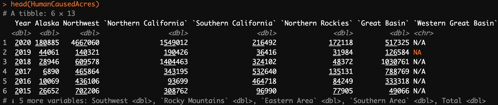
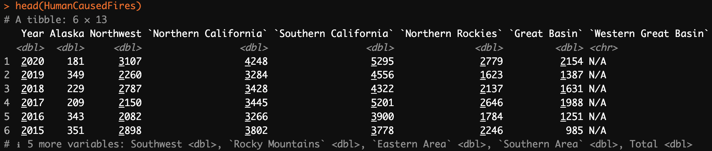
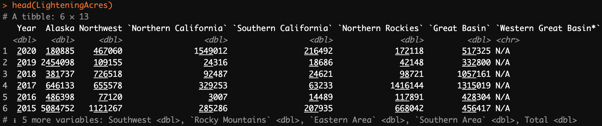
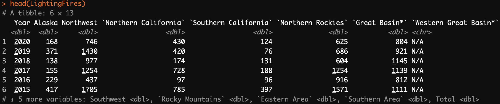
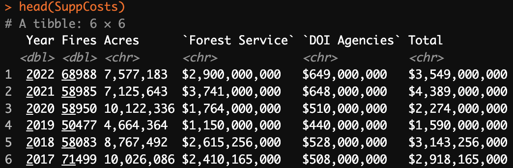
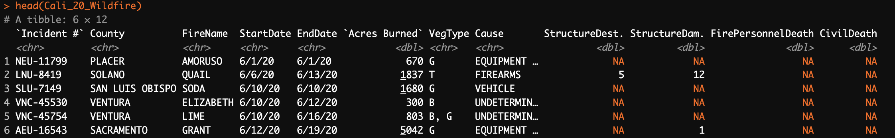
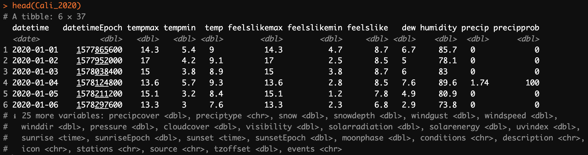

Data Gathering
Wildfire Statitics
Data Source
The National Interagency Fire Center (NIFC)1, established in 1965, is a pivotal institution in the United States responsible for coordinating and supporting wildfire management, suppression efforts, and wildland fire prevention initiatives. The NIFC’s work is of paramount importance in the United States due to the increasing frequency and severity of wildfires. It serves as a critical hub for wildfire information, resource coordination, and expertise, contributing to the safety of communities and the protection of natural resources.
Gathering Method
To obtain the data from NIFC, I followed these steps:
- Access Permission: visited the NIFC website (https://www.nifc.gov/) to review their data sharing policies and ensure compliance with their terms of use.
- Data Download: accessed the datasets directly from the NIFC’s data repository, which provides downloadable CSV files for public use.
- Data Storage: The downloaded data files were securely stored in the project’s data repository for further analysis and processing.
Data Description
We utilize the following datasets obtained from the NIFC for the analysis:
- HumanCausedAcres.csv
- This dataset contains information about the total acreage affected by human-caused wildfires.
- Key columns:
Year,Northern California,Southern California,Total
- HumanCausedFires.csv
- Complementary to the HumanCausedAcres dataset, this file provides details about individual human-caused wildfires.
- Key columns:
Year,Northern California,Southern California,Total
- LighteningAcres.csv
- This dataset contains information on the acreage affected by wildfires caused by lightning strikes.
- Key columns:
Year,Northern California,Southern California,Total
- LightningFires.csv
- Complementary to the LightningAcres dataset, this dataset provides detailed information about individual lightning-caused wildfires.
- Key Columns:
Year,Northern California,Southern California,Total
- SuppCosts.csv
- This dataset contains information about the costs associated with wildfire suppression efforts.
- Key Columns:
Year,Fires,Acres,Total
California Wildfire Statistics
Data Source
The California Department of Forestry and Fire Protection (CAL FIRE)2 is the primary source of wildfire data for the state of California. CAL FIRE plays a critical role in wildfire management, suppression efforts, and public safety. Their data is essential for understanding and mitigating the impact of wildfires on California’s communities and natural resources.
Gathering Method
To acquire the wildfire data from CAL FIRE, the following steps were taken:
Access Permission: visited the CAL FIRE website to review their data sharing policies and ensure compliance with their terms of use.
Data Collection: The datasets were obtained directly from CAL FIRE’s data repository. CAL FIRE provides accessible and downloadable data files, making it a valuable resource for wildfire-related information.
Data Storage: The downloaded data files were securely stored in the project’s data repository, ready for further analysis and processing.
Data Description
The datasets used for this analysis is sourced from CAL FIRE and provides information on large wildfires (greater than 300 acres) in California for the year 2020, 2017, 2015, 2014 and 2010. The datasets includes the following key columns:
Incident #: A unique identifier for each wildfire incident.County: The county in California where the wildfire occurred.FireName: The name assigned to the wildfire.StartDate: The date when the wildfire started.EndDate: The date when the wildfire was extinguished.Acres Burned: The total acreage affected by the wildfire.VegType: The type of vegetation involved in the wildfire.Cause: The cause of the wildfire.StructureDest.: The number of structures destroyed due to the wildfire.StructureDam.: The number of structures damaged due to the wildfire.FirePersonnelDeath: The number of firefighting personnel deaths associated with the wildfire.CivilDeath: The number of civilian deaths related to the wildfire.

This dataset provides valuable insights into wildfires in California, including their locations, sizes, causes, and impact on structures and lives. It serves as a fundamental resource for understanding the climate influence on wildfires in California.
California Weather Data
Data Source
The weather data for California was obtained from the Visual Crossing Weather API3. Visual Crossing Weather is a weather data service that provides historical weather information, including temperature, precipitation, wind, and other meteorological data. This data source was chosen to gather historical weather data for the analysis of its potential correlation with wildfire incidents.
Gathering Method
To obtain historical weather data for California, the following steps were followed:
- Access Permission: The Visual Crossing Weather API was accessed to review their data sharing policies and ensure compliance with their terms of use.
- Data Retrieval: A Python script using the
requestslibrary was utilized to send a GET request to the Visual Crossing Weather API. The API endpoint was configured to retrieve weather data for California for specific date ranges. - Data Conversion: The API response, received in JSON format, was parsed to extract the weather data. The JSON data was converted into a Pandas DataFrame for easier analysis.
- Data Storage: The resulting weather data for California in each year was stored in separate CSV files. These files were securely saved in the project’s data repository for further analysis and integration into the project.
Data Description
Weather data was gathered for the following years: 2020, 2017, 2015, 2014, 2010, and 2001. The data includes various meteorological parameters for each day in the specified years. Below is a description of the common columns present in the weather datasets, represented here using data from the “Cali_2020.csv” dataset as an example:
datetime: The date of the recorded data.datetimeEpoch: The Unix epoch timestamp corresponding to the date.tempmax: The maximum temperature in Celsius for the day.tempmin: The minimum temperature in Celsius for the day.temp: The average temperature in Celsius for the day.feelslikemax: The maximum “feels like” temperature in Celsius for the day.feelslikemin: The minimum “feels like” temperature in Celsius for the day.feelslike: The average “feels like” temperature in Celsius for the day.dew: Dew point temperature in Celsius.humidity: Relative humidity as a percentage.precip: Total precipitation in millimeters.precipprob: Probability of precipitation as a percentage.
The datasets also include additional columns providing information on various weather-related parameters, such as wind speed, cloud cover, and sunrise/sunset times, among others.

These weather datasets will be used to analyze weather patterns and their potential impact on wildfire incidents in California as part of the project’s data analysis and modeling efforts.
Articles on Wildfire Prevention
Data Source
The articles data on wildfire prevention was obtained from the News API4. News API is a service that provides access to a wide range of news articles from various sources, including news websites and publications. This data source was chosen to gather news articles related to wildfire prevention for analysis and research purposes.
Gathering Method
To obtain news articles on wildfire prevention, the following steps were followed:
- API Access: An API key from News API was obtained, which allowed access to their news article database.
- API Request: A Python script was used to send an HTTP GET request to the News API endpoint. The request included parameters such as the API key, the topic “wildfire prevention,” and sorting by relevancy.
- Response Parsing: The API response, received as JSON data, was parsed using the
jsonlitelibrary in R. This transformed the JSON data into a structured format for further analysis. - Data Storage: The extracted news articles were saved in a JSON file named “articles.json” for subsequent data processing and analysis.
Data Description
The dataset consists of news articles related to wildfire prevention. Each article includes the following information:
source: Information about the source of the article, including its name and ID.author: The author(s) of the article.title: The title of the article.description: A brief description or summary of the article.url: The URL where the full article can be accessed.urlToImage: An image associated with the article.publishedAt: The date and time when the article was published.content: The full content of the article.
The articles cover various aspects of wildfire prevention, including strategies, initiatives, and insights on combating wildfires. This dataset will be used for text analysis and exploration of wildfire prevention topics as part of the project’s research and analysis efforts.